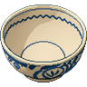
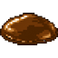
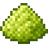

1
上へシュッ
具を上へすばやくフリック。
60秒（1分）のタイムアタック！
冷やしたぬきそばを
何杯出せるか競うゲームです。
具を上へすばやくフリック。
上のどんぶりに入れば成功！

ここ同じ具をもう一度なげられる。

つゆ
わさびプレイ中、まれに具のかわりにお面が出てくる。入れるか・よけるか、よく見てね！
どんぶりに入れると、いっきに完成＋ボーナス1杯の大当たり！
入れてしまうと盛り直し（その杯が最初から）。よけてやりすごそう。
ミスせず続けて入れるとコンボ！ 6回つづけて成功するごとにボーナス +1杯がついて、提供数がぐんぐん伸びる。つなぐほど高得点！
その回の提供数で称号がきまるよ。たくさん出すほど上のランク！
タイムアップのあと「ランキングに登録」で名前を入れると、提供数が全国ランキングにのる。みんなと「60秒で何杯出せるか」を競おう！
タイトルの赤いボタン これはキツイでプレイ（HARD） から挑戦できる、腕に自信のある人向けモード。ルールも60秒も同じだけど、難しさが段ちがい。
そして…プレイ中、何かが起きるかも？ 詳しくは、その目で。
このモードの記録は、全国ランキングで ★ つきで区別されます。
このアプリは個人制作の非公式ファンアプリ（ジョーク）です。実在の店舗・企業・自治体・商品とは関係なく、タイアップでもありません。冷やしたぬきそばは本当においしいので、ぜひ現地で。